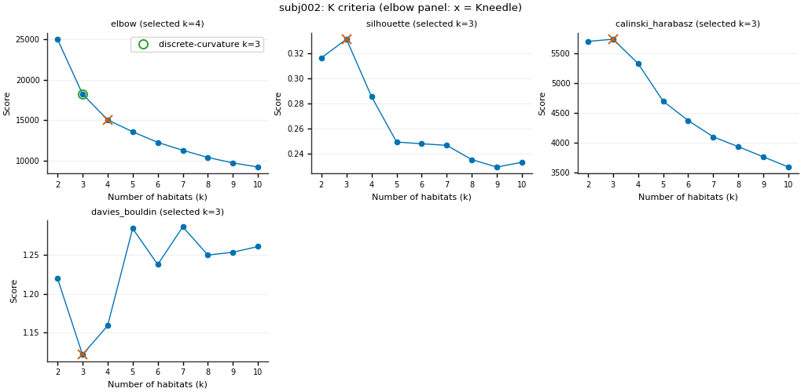
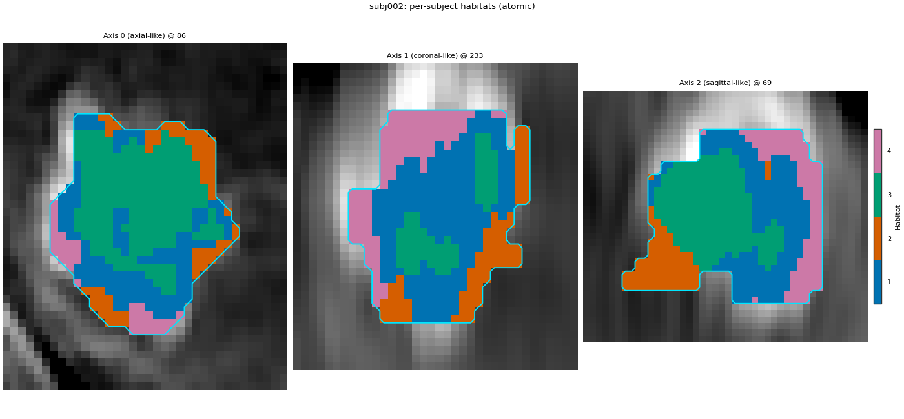
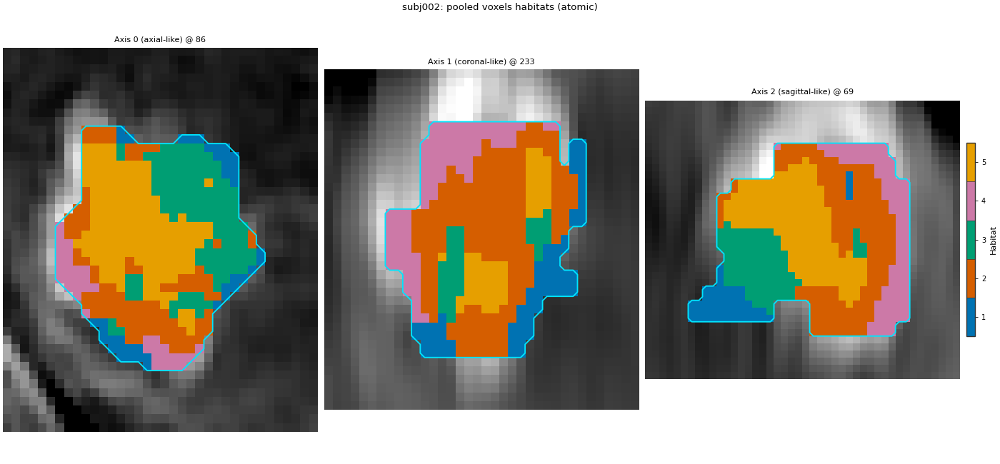

备注
Go to the end 以下载完整示例代码。
池化-体素 生境 from atomic components#
背景。 由原子组件构建两步法生境 用 HABIT 的各个组件重建两步法设计，并展示其与 Study 一致。另外两种设计用相同组件但步骤更少： 生境 inside each 受试者 的按受试者（一步法）设计在每位患者自身体素上拟合一个模型； 由池化体素得到的生境 的池化体素设计在所有患者的体素上拟合一个队列模型。二者都没有超体素化器。
目的。 你将两种设计写为 plain 逐受试者循环，再运行对应 HabitatSpec 与 Study 并检查标签（逐体素）、模型 id 与特征表一致。
Elbow / Kneedle 说明。 HABIT validation="elbow" 与 kneedle 同规则（Satopaa, Albrecht, Irwin, and Raghavan, 2011, Finding a "Kneedle" in a Haystack, IEEE ICDCS）：KneeLocator 作用于 inertia，曲线 convex、方向 decreasing — 非 Thorndike (1953) 非正式肘部，也非 v1.0 前离散曲率二阶差分规则。见 构建生境图 与 聚类算法与生境数 。
何时使用。 当你要把这些设计之一嵌入自有流水线，或想看清 Study 对它们做什么时。常规研究用 Study 更短且会记录运行清单。
分析定义。 两种设计均遵循各自 Study 页：四期 DCE、ROI LAP 、受试者级 winsorize（1 % / 1 %）+ z-score、k-means 拟合器 2..10 候选、elbow 规则、 n_init=10 、最近质心分配、seed 0。池化体素设计在池化后增加队列级 10 分箱均匀分箱；逐受试者设计无此步。为加快页面，均用两名较小演示患者（subj002 与 subj003，非 Study 页的 subj001 + subj002），特征族为 volume、MSI、ITH（无图）。
关键术语。 完整定义见 概念 。
体素单元 ——
habit.pipeline.voxel_units()将一名受试者的体素特征表包装为聚类单元，其中每个 ROI 体素自成一个单元。当设计直接对体素聚类时，它用来代替超体素化器。fitter / model / assigner —— fitter 从单元列表学习质心并返回
HabitatModel；模型的 assigner 将生境 id 绘制到单受试者单元上。队列级链 — 在池化训练行上拟合一次的预处理；拟合状态附于模型。
逐受试者设计：原子循环#
每个受试者在自己的体素上单独调用 fitter：无池化、无队列级链，因无池化行可学 bin 边界。 fit 不带 cohort= ：模型不由队列定义，仅由该受试者单元定义。
one_step_models = {}
one_step_maps = []
one_step_rows = []
fitter = make_fitter()
for subject in train:
units = normalized_voxel_units(subject)
# A private model for this patient; the elbow rule runs per patient.
model = fitter.fit([units])
one_step_models[subject.subject_id] = model
# The assigner of THIS patient's model labels this patient only.
habitat_map = model.assigner("nearest_centroid")(units)
one_step_maps.append(habitat_map)
one_step_rows.append(feature_row(subject, habitat_map))
print(subject.subject_id, "voxel units:", units.feature_frame().shape[0], "K =", model.n_habitats)
one_step_table = pd.concat(one_step_rows, ignore_index=True)
subj002 voxel units: 9858 K = 4
subj003 voxel units: 6156 K = 4
逐受试者设计：与 Study 对照#
同一设计声明为 spec（无 partition、无 pool、无 preprocess_cohort），在相同两名患者上用 Study 运行。
one_step_spec = HabitatSpec(
name="inside_each_subject",
stages=(
Stage("extract", Spec("raw", {"modalities": list(MODALITIES), "roi": ROI})),
Stage("preprocess", Spec("winsorize", {"winsor_limits": [0.01, 0.01]})),
Stage("preprocess2", Spec("zscore")),
Stage("fit", Spec("kmeans", {"min_habitats": 2, "max_habitats": 10, "validation": "elbow", "n_init": 10})),
Stage("assign", Spec("nearest_centroid")),
Stage("volume", Spec("volume")),
Stage("msi", Spec("msi")),
Stage("ith", Spec("ith_score")),
),
random_seed=SEED,
)
one_step_result = Study(one_step_spec).fit_predict(
train,
backend=backend_from_policy(
RunPolicy(backend="serial", on_subject_failure="continue")
),
)
for atomic_map, study_map in zip(one_step_maps, one_step_result.habitat_maps):
sid = atomic_map.subject_id
same_labels = np.array_equal(atomic_map.label_array, study_map.label_array)
same_id = one_step_models[sid].model_id == one_step_result.subject_models[sid].model_id
print(f"per-subject {sid}: labels identical = {same_labels}, model_id equal = {same_id}")
print(f"per-subject feature table: same = {same_table(one_step_table, one_step_result.features.frame)}")
Cohort.map[_DefineAndLabelWithinSubject]: 0%| | 0/2 [00:00<?, ?it/s]
Cohort.map[_DefineAndLabelWithinSubject]: 50%|█████ | 1/2 [00:02<00:02, 2.52s/it]
Cohort.map[_DefineAndLabelWithinSubject]: 100%|██████████| 2/2 [00:04<00:00, 2.38s/it]
Cohort.map[_DefineAndLabelWithinSubject]: 100%|██████████| 2/2 [00:04<00:00, 2.38s/it]
per-subject subj002: labels identical = True, model_id equal = True
per-subject subj003: labels identical = True, model_id equal = True
per-subject feature table: same = True
Elbow / Kneedle 说明（首名训练患者）#
HABIT 验证中的 elbow 与 kneedle 是同一规则。它对 k-means 惯性（簇内平方和）运行 KneeLocator ，曲线凸、方向递减（Satopaa, Albrecht, Irwin, and Raghavan, 2011, Finding a "Kneedle" in a Haystack, IEEE ICDCS）。将 k 与惯性归一化到单位正方形，画出首末点弦线，取离该弦最远的 k；光滑曲线上该拐点常落在肉眼所见弯折的右侧。文献中的 "elbow" 指观察簇内离散度随 k 的变化（Thorndike RL, 1953, Who belongs in the family?, Psychometrika 18(4):267-276）——并非二阶差分公式。离散曲率肘部（视觉肘部、计算得到）最大化惯性的二阶差分（HABIT pre-v1.0 elbow）。每位患者的生境图保留该患者的 Kneedle K。
_sid0 = train[0].subject_id
_model0 = one_step_models[_sid0]
_report = _model0.preprocessing_state["selection_report"]
_candidates = [int(k) for k in _report["candidates"]]
_inertia = np.asarray(_report["scores"][_report["methods"][0]], dtype=float)
_k_kneedle = int(_model0.n_habitats)
_k_discrete = (
int(_candidates[int(np.argmax(np.diff(_inertia, n=2))) + 1])
if len(_inertia) >= 3
else _k_kneedle
)
from habit.habitat_model import KMeansHabitatModelFitter as _KMeansFitter
_units0 = [normalized_voxel_units(train[0])]
_k_table = {"elbow_kneedle": _k_kneedle, "discrete_curvature_elbow": _k_discrete}
for _name in ("silhouette", "calinski_harabasz", "davies_bouldin"):
_f = _KMeansFitter(min_habitats=2, max_habitats=10, validation=_name, n_init=10)
_f.set_random_state(SEED)
_k_table[_name] = _f.fit(_units0).n_habitats
print(f"{_sid0}: K by criterion (skip gap)")
for _name, _k in _k_table.items():
print(f" {_name}: {_k}")
_criteria = ("elbow", "silhouette", "calinski_harabasz", "davies_bouldin")
_vote = _KMeansFitter(
min_habitats=2, max_habitats=10, validation=list(_criteria), n_init=10
)
_vote.set_random_state(SEED)
_vote_report = dict(_vote.fit(_units0).preprocessing_state["selection_report"])
_vote_report["selected"] = {
"elbow": _k_kneedle,
"silhouette": _k_table["silhouette"],
"calinski_harabasz": _k_table["calinski_harabasz"],
"davies_bouldin": _k_table["davies_bouldin"],
}
fig = plot_cluster_validation_from_report(
_vote_report,
title=f"{_sid0}: K criteria (elbow panel: x = Kneedle)",
)
fig.axes[0].plot(
_k_discrete,
float(_inertia[_candidates.index(_k_discrete)]),
marker="o",
markersize=8,
markerfacecolor="none",
markeredgecolor="C2",
markeredgewidth=1.4,
linestyle="none",
label=f"discrete-curvature k={_k_discrete}",
)
fig.axes[0].legend(loc="best", fontsize=8)
fig.savefig("out/atomic_pooled_k_criteria.png", dpi=150, bbox_inches="tight")
plt.show()

subj002: K by criterion (skip gap)
elbow_kneedle: 4
discrete_curvature_elbow: 3
silhouette: 3
calinski_harabasz: 3
davies_bouldin: 3
池化体素设计：原子循环#
每位受试者的起点相同。然后将所有训练患者的体素单元池化，队列级链在这些池化的 训练 行上学习分箱边界，一次拟合调用即为队列定义生境。 cohort=train 把训练患者指纹写入模型。
units = [normalized_voxel_units(subject) for subject in train]
pooled = pd.concat([one.feature_frame() for one in units], ignore_index=True)
print("pooled training voxels:", pooled.shape)
# No cohort-level preprocessing after subject z-score.
pooled_ready_units = list(units)
pooled_model = make_fitter().fit(pooled_ready_units, cohort=train)
print(pooled_model.summary())
assigner = pooled_model.assigner("nearest_centroid")
pooled_maps = [assigner(one) for one in pooled_ready_units]
pooled_table = pd.concat(
[feature_row(subject, habitat_map) for subject, habitat_map in zip(train, pooled_maps)],
ignore_index=True,
)
pooled training voxels: (16014, 4)
HabitatModel kmeans-cf751438e76faa67
habitats : 5
features (4) : pre_contrast, LAP, PVP, delay_3min
defining cohort : n=2
modalities : pre_contrast, LAP, PVP, delay_3min
cohort digest : 67b0ee850cdab50c...
produced by : habitat_model_fitter.kmeans
habit version : 3.0.0
random seed : 0
preprocessing state: inertia, selection_report, validation
池化体素设计：与 Study 对照#
池化体素页 spec（无 partition），与原子循环相同三类特征族。
pooled_spec = HabitatSpec(
name="pooled_voxels",
stages=(
Stage("extract", Spec("raw", {"modalities": list(MODALITIES), "roi": ROI})),
Stage("preprocess", Spec("winsorize", {"winsor_limits": [0.01, 0.01]})),
Stage("preprocess2", Spec("zscore")),
Stage("pool", Spec("pool")),
Stage("fit", Spec("kmeans", {"min_habitats": 2, "max_habitats": 10, "validation": "elbow", "n_init": 10})),
Stage("assign", Spec("nearest_centroid")),
Stage("volume", Spec("volume")),
Stage("msi", Spec("msi")),
Stage("ith", Spec("ith_score")),
),
random_seed=SEED,
)
pooled_result = Study(pooled_spec).fit_predict(
train,
backend=backend_from_policy(
RunPolicy(backend="serial", on_subject_failure="continue")
),
)
print(f"pooled model_id: atomic {pooled_model.model_id} | Study {pooled_result.habitat_model.model_id}")
print(f"pooled model_id equal = {pooled_model.model_id == pooled_result.habitat_model.model_id}")
for atomic_map, study_map in zip(pooled_maps, pooled_result.habitat_maps):
same_labels = np.array_equal(atomic_map.label_array, study_map.label_array)
print(f"pooled {atomic_map.subject_id}: labels identical = {same_labels}")
# Centroids: the habitat definition itself, in the binned feature space.
same_centroids = np.allclose(
np.asarray(pooled_model.centroids, dtype=float),
np.asarray(pooled_result.habitat_model.centroids, dtype=float),
)
print(f"pooled centroids allclose = {same_centroids}")
print(f"pooled feature table: same = {same_table(pooled_table, pooled_result.features.frame)}")
Cohort.map[_ComputeUnits]: 0%| | 0/2 [00:00<?, ?it/s]
Cohort.map[_ComputeUnits]: 50%|█████ | 1/2 [00:01<00:01, 1.05s/it]
Cohort.map[_ComputeUnits]: 100%|██████████| 2/2 [00:02<00:00, 1.04s/it]
Cohort.map[_ComputeUnits]: 100%|██████████| 2/2 [00:02<00:00, 1.04s/it]
Cohort.map[_AssignPrecomputedUnits]: 0%| | 0/2 [00:00<?, ?it/s]
Cohort.map[_AssignPrecomputedUnits]: 50%|█████ | 1/2 [00:00<00:00, 1.61it/s]
Cohort.map[_AssignPrecomputedUnits]: 100%|██████████| 2/2 [00:01<00:00, 1.64it/s]
Cohort.map[_AssignPrecomputedUnits]: 100%|██████████| 2/2 [00:01<00:00, 1.64it/s]
pooled model_id: atomic kmeans-cf751438e76faa67 | Study kmeans-cf751438e76faa67
pooled model_id equal = True
pooled subj002: labels identical = True
pooled subj003: labels identical = True
pooled centroids allclose = True
pooled feature table: same = True
同一患者上的两种设计#
同一患者、同一特征、两种定义。左：仅属于该患者的生境。右：与另一名训练患者共享的生境。两张图的颜色 不可 互相对照。
subject = train[0]
for name, habitat_map in (("per-subject", one_step_maps[0]), ("pooled voxels", pooled_maps[0])):
fig = plot_habitat_overlay(
subject.image("LAP"),
habitat_map,
title=f"{subject.subject_id}: {name} habitats (atomic)",
crop_to="labels",
)
stem = name.replace(" ", "_").replace("-", "_")
fig.savefig(f"out/atomic_other_designs_{stem}.png", dpi=150, bbox_inches="tight")
plt.show()


F:\work\habit_project\habit\viz\habitat_overlay.py:806: UserWarning: Display geometry conflict: image/anatomy direction does not match mask/label direction. Using the mask/label direction so coronal/sagittal superior-up follows the labelled anatomy. Pass direction= to override.
resolved_direction, resolved_spacing = resolve_display_geometry(
F:\work\habit_project\habit\viz\habitat_overlay.py:806: UserWarning: Display geometry conflict: image/anatomy direction does not match mask/label direction. Using the mask/label direction so coronal/sagittal superior-up follows the labelled anatomy. Pass direction= to override.
resolved_direction, resolved_spacing = resolve_display_geometry(
如何解读结果#
逐受试者设计：elbow 规则为 subj002（9 858 体素）与 subj003（6 156 体素）各选 K = 4，各用自身体素。Atomic 与 Study 对两患者体素级标签完全一致，逐受试者 model id 相等，特征表匹配。
池化体素设计：本运行池化 16 014 个体素，K = 5。模型 id、质心、两名患者标签与特征表均与
Study一致。模型 id 为拟合器设置与训练受试者的摘要，相等即确认两路径在同一患者上拟合同一对象；标签与质心一致即确认算出同一结果。
池化体素 K（5）与逐受试者 K（4）不同，因聚类行不同：两患者一起对逐一患者。并非两路径矛盾。
接下来去哪里#
由原子组件构成的两步法设计： 由原子组件构建两步法生境 。
这些设计对应的 Study 页面： 生境 inside each 受试者 与 由池化体素得到的生境 。
并行后端上的原子组件： 执行后端上的原子组件 。
各组件及其选项： 进阶 。
Total running time of the script: (0 minutes 53.786 seconds)